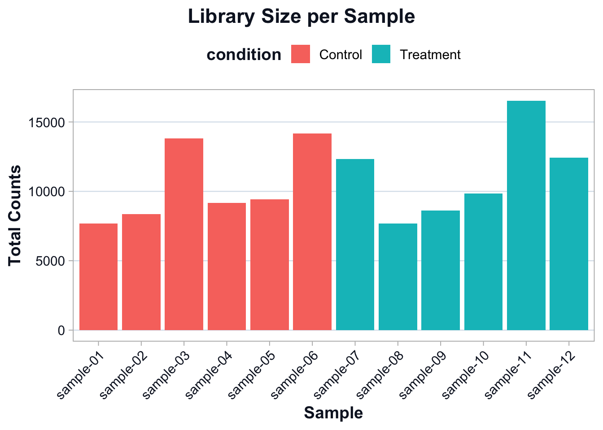

source("scripts/R/cdi-plot-theme.R")Normalization and Exploratory Data Analysis
Why normalization exists
Raw counts are not directly comparable across samples.
Two samples can have different sequencing depths.
Even if biology is identical, the larger library will tend to have larger counts.
Normalization is the step that makes samples comparable for exploratory analysis and downstream modeling.
In this free guide we use simple, transparent normalization approaches to build intuition.
Load counts and metadata
counts <- readr::read_csv("data/demo-counts.csv", show_col_types = FALSE)
meta <- readr::read_csv("data/demo-metadata.csv", show_col_types = FALSE)
count_matrix <- as.matrix(counts[-1])
rownames(count_matrix) <- counts$gene_id
meta# A tibble: 12 × 3
sample_id condition library_size
<chr> <chr> <dbl>
1 sample-01 Control 2763082
2 sample-02 Control 3050899
3 sample-03 Control 5217936
4 sample-04 Control 3338902
5 sample-05 Control 3398302
6 sample-06 Control 5468525
7 sample-07 Treatment 3753784
8 sample-08 Treatment 2236632
9 sample-09 Treatment 2660286
10 sample-10 Treatment 2859912
11 sample-11 Treatment 4719552
12 sample-12 Treatment 3641638Library size recap
library_sizes <- colSums(count_matrix)
library_df <- tibble::tibble(
sample = colnames(count_matrix),
library_size = as.numeric(library_sizes)
)
# Avoid name collisions: metadata already contains a library_size column
meta_min <- dplyr::select(meta, sample_id, condition)
library_df <- dplyr::left_join(
library_df,
meta_min,
by = c("sample" = "sample_id")
)
ggplot2::ggplot(library_df, ggplot2::aes(x = sample, y = library_size, fill = condition)) +
ggplot2::geom_col() +
ggplot2::labs(
title = "Library Size per Sample",
x = "Sample",
y = "Total Counts"
) +
cdi_theme() +
ggplot2::theme(axis.text.x = ggplot2::element_text(angle = 45, hjust = 1))
The goal is not to force identical library sizes.
The goal is to account for library size differences during comparison.
A simple normalization: counts per million (CPM)
CPM scales counts by total library size.
This is not a replacement for model-based normalization, but it is a good teaching tool for intuition and EDA.
cpm <- sweep(count_matrix, 2, library_sizes, FUN = "/") * 1e6Compare raw counts vs CPM on a single gene
Pick one gene to illustrate the effect of scaling.
set.seed(1)
example_gene <- rownames(count_matrix)[1]
compare_df <- tibble::tibble(
sample = colnames(count_matrix),
raw = as.numeric(count_matrix[example_gene, ]),
cpm = as.numeric(cpm[example_gene, ])
)
compare_df <- dplyr::left_join(
compare_df,
meta_min,
by = c("sample" = "sample_id")
)
compare_long <- tidyr::pivot_longer(
compare_df,
cols = c(raw, cpm),
names_to = "scale",
values_to = "value"
)
ggplot2::ggplot(compare_long, ggplot2::aes(x = sample, y = value, fill = condition)) +
ggplot2::geom_col() +
ggplot2::facet_wrap(~ scale, scales = "free_y") +
ggplot2::labs(
title = "Raw Counts vs CPM for One Gene",
subtitle = paste0("Gene: ", example_gene),
x = "Sample",
y = "Value"
) +
cdi_theme() +
ggplot2::theme(axis.text.x = ggplot2::element_text(angle = 45, hjust = 1))
You should see that CPM partially reduces differences driven purely by sequencing depth.
Log transformation for EDA
For exploratory analysis, it is common to work on a log scale.
log_cpm <- log2(cpm + 1)Gene filtering for stable structure
EDA is more stable when we focus on informative genes.
A simple approach is to keep genes with non-trivial variation.
gene_vars <- apply(log_cpm, 1, var)
keep <- gene_vars >= stats::quantile(gene_vars, 0.75)
sum(keep)[1] 125We keep the top 25% most variable genes for EDA.
log_cpm_var <- log_cpm[keep, ]PCA: a first look at global structure
PCA is not a hypothesis test.
It is a structure summary.
It answers:
- do samples cluster by condition?
- are there outliers?
- is there evidence of batch-like structure?
pca <- stats::prcomp(t(log_cpm_var), center = TRUE, scale. = FALSE)
pca_df <- tibble::tibble(
sample = rownames(pca$x),
PC1 = pca$x[, 1],
PC2 = pca$x[, 2]
)
pca_df <- dplyr::left_join(
pca_df,
meta_min,
by = c("sample" = "sample_id")
)
var_explained <- (pca$sdev^2) / sum(pca$sdev^2)
pc1_var <- round(var_explained[1] * 100, 1)
pc2_var <- round(var_explained[2] * 100, 1)ggplot2::ggplot(pca_df, ggplot2::aes(x = PC1, y = PC2, color = condition)) +
ggplot2::geom_point(size = 3, alpha = 0.9) +
ggplot2::labs(
title = "PCA of Log-CPM Expression",
subtitle = paste0("PC1: ", pc1_var, "%, PC2: ", pc2_var, "% variance explained"),
x = "PC1",
y = "PC2"
) +
cdi_theme()
Interpretation guidance:
- Separation by condition suggests a strong global signal.
- Overlap suggests weaker signal or higher within-group variation.
- Isolated points suggest potential outliers or mislabeled samples.
Clustering as a complementary view
Hierarchical clustering provides a second view of similarity.
d <- stats::dist(t(log_cpm_var), method = "euclidean")
hc <- stats::hclust(d, method = "complete")plot(
hc,
main = "Sample Clustering (Euclidean distance on log-CPM)",
xlab = "",
sub = ""
)
This is a quick diagnostic view, not a final conclusion.
Interpretation
By the end of this lesson you should be able to explain:
- why normalization exists
- why log transformation is used for EDA
- how PCA summarizes global structure
- how clustering can reveal outliers and grouping
In the next lesson we shift from structure to inference: how results become biological claims.